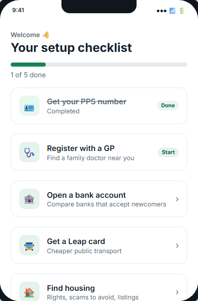
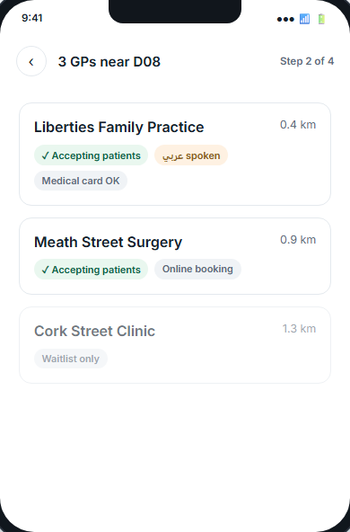
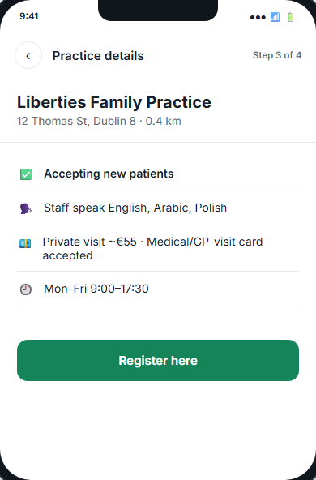
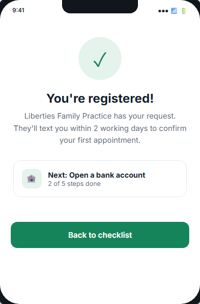
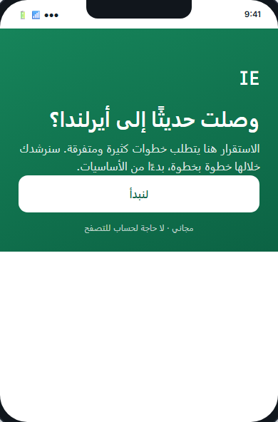
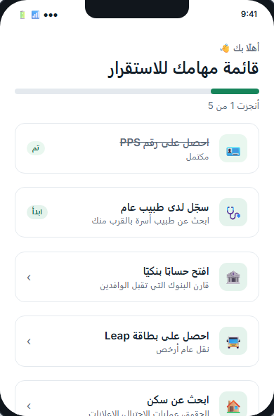
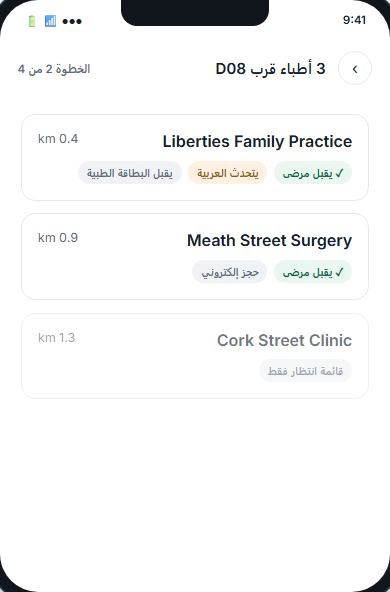

The one-line version
New arrivals in Ireland — international students, workers, refugees and their families — have to complete a long list of unconnected admin tasks (PPS number, GP, bank account, Leap card, housing) with no single, trustworthy guide. Settling in Ireland is a mobile companion that turns that chaos into a clear, step-by-step checklist. This case study goes deep on one flow: registering with a GP.
Why this project: it's a genuinely hard, emotional, real-world problem with users I can actually reach and interview — and it lets me design for accessibility and localization (including full Arabic right-to-left support), which is rarely shown in a junior portfolio.
Getting a doctor shouldn't be this hard
In Ireland, there's no automatic assignment to a GP. You have to find a practice yourself, check whether they're accepting new patients, understand whether you need a medical card, and bring the right documents. For someone new to the country — possibly in a new language — this is genuinely confusing and often delayed until there's an emergency.
The information exists, but it's scattered across the HSE website, forums, Facebook groups, and word of mouth. There's no single place that says: here are the doctors near you taking patients, here's what you need, here's what it costs.
disconnected tasks
to feel "set up" in a new country
official guided flows
that walk a newcomer through GP registration
languages
many newcomers are more comfortable in — including Arabic (RTL)
The numbers above frame the problem from desk research and lived experience; the user pain behind them is what the interviews below will test.
What this needs to do
Rather than design an entire super-app, I scoped the case study to one end-to-end flow so I could take it to real depth: "I'm new here and I need to register with a GP."
Design goals
- Reduce uncertainty — always show the next step and what it costs.
- Only surface relevant options — practices nearby that are actually accepting patients.
- Lower the language barrier — full English and Arabic (RTL), and surface GPs whose staff speak the user's language.
- Build trust — plain language, no jargon, no account required to explore.
Success metrics to measure in testing
- Task success rate on "register with a GP" (target: ≥ 90% unaided)
- Time to find a suitable, patient-accepting GP
- Confidence rating before vs. after (1–5)
Research plan (ready to run)
The plan is designed so that a handful of conversations produce strong, specific insight. Below is the exact kit — recruit, interview, and survey — so the study is repeatable and the findings are defensible.
Who I'll talk to
5–6 people who moved to Ireland in the last ~2 years and have needed (or avoided) a GP. Mix of students, workers, and at least 2 non-native English speakers (incl. an Arabic speaker) to test the bilingual need.
Method
- 30–40 min semi-structured interviews (video or in person)
- A short screener survey to recruit and get baseline numbers
- Verbal consent + recording permission captured at the start
Interview script
Warm-up. “Tell me about when you first arrived in Ireland. What were the first few things you had to sort out?”
Story. “Walk me through the last time you needed a doctor here. Start from the moment you realised you needed one.”
Pain. “What was the most confusing or frustrating part of that?”
Workarounds. “Where did you go for help or information? Who or what did you trust?”
Language. “Did language ever make it harder? When?”
Emotion. “How did the whole thing make you feel?”
Magic wand. “If you could have had one thing to make this easy, what would it have been?”
Wrap. “Is there anything I didn't ask about that mattered?”
Screener / survey questions
- When did you move to Ireland?
- Have you registered with a GP? (Yes / No / Tried but gave up)
- How difficult was it? (1 very easy – 5 very hard)
- What made it hard? (open text)
- What language are you most comfortable dealing with health admin in?
- Would you use an app that guided you through setting up in Ireland? (1–5)
Findings add after interviews
Working hypotheses — to confirm or kill
Who we're designing for
This is a proto-persona — built from desk research and assumptions, to be corrected by the interviews. That's the point: it gives the team something concrete to argue with.
Lina, 27 proto-persona · to validate
Goals
- Get set up "properly" and feel settled
- Find a doctor before she actually needs one
- Avoid looking lost or asking the wrong thing
Frustrations
- Conflicting advice online
- Unsure what things cost or what's free
- English health jargon is intimidating
Journey map — registering with a GP today
The two lowest points — Search and Dead ends — are where the product should do the most work.
How might we…
- …help a newcomer find GPs near them that are actually accepting patients, in one tap?
- …make cost and required documents obvious before they commit?
- …make the whole thing feel as calm in Arabic as it does in English?
From flow to interface
The flow was kept deliberately linear so there's always one obvious next step: Welcome → Setup checklist → Find a GP → Results → Practice detail → What you'll need → Confirmation. The checklist "hub" frames GP registration as one of several tasks, so the single flow still tells the bigger "settling in" story.




Key decisions
- Surface "accepting patients" as the primary filter. The #1 hypothesised blocker becomes the first thing you see on every result.
- Put cost and documents before commitment. The practice detail and "what you'll need" screens remove the fear of the unknown.
- No account to explore. Lowers the barrier for someone just trying to understand the system.
The differentiator — bilingual & right-to-left
The whole flow works in English and Arabic. Switching language doesn't just translate text — it flips the entire layout to right-to-left: navigation, progress direction, icon placement and alignment all mirror correctly. The app also surfaces GPs whose staff speak the user's language, turning localization into a genuine feature rather than an afterthought.



Try the prototype
It's fully clickable — tap through the flow, and use the toggle in the top corner to switch between English and Arabic.
Open prototype full screen ↗How I'll test it
A quick, repeatable usability test on the clickable prototype — 3–5 participants is enough to surface the big problems.
The task I'll give them
Scenario: “You've just moved to Dublin and you want to register with a local doctor. Using this app, find a GP near you that's taking new patients and sign up. Think aloud as you go.”
What I'll measure
- Did they complete it without help? Where did they hesitate?
- Did they understand "accepting patients", cost, and documents?
- Confidence rating before vs. after (1–5)
- For Arabic speakers: did RTL feel natural, or were there rough edges?
Results add after testing
What's next
- Run the interviews and replace every "to validate" marker with real evidence (or change the design where the evidence disagrees).
- Test the prototype with 5 people, including an Arabic speaker, and document the iteration.
- Expand one more flow (likely "open a bank account") once the GP flow is validated.
What I'm learning
Designing honestly means separating what I believe from what I've proven. Everything marked as a hypothesis on this page is a bet I'm about to test — and showing that process openly is, I think, more convincing than a polished story that hides its assumptions.